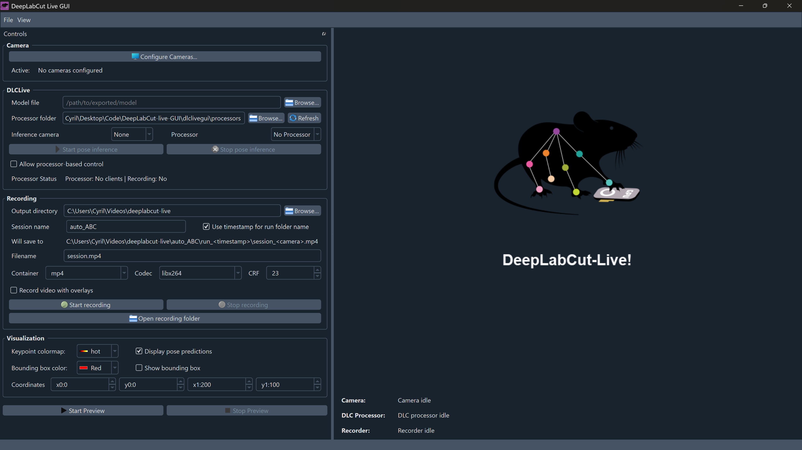

GUI overview#
DeepLabCut-live-GUI (dlclivegui) is a PySide6-based desktop application for running real-time DeepLabCut pose estimation experiments with one or multiple cameras, optional processor plugins, and video recording (with or without overlays).
This page gives you a guided tour of the main window, explains the core workflow, and introduces the key concepts used throughout the user guide.
Main window at a glance#
Important
Remember to activate your virtual/conda environment and launch the application with dlclivegui (or uv run dlclivegui) after installation.
When you first launch the application, you will see the main window with three primary areas:
A Controls panel (left) for configuring cameras, inference, recording, and overlays
A Video panel (right) showing the live preview (single or tiled multi-camera)
A Stats area (below the video) summarizing camera, inference, and recorder performance
{kind=link}

Fig. 1 The main window on startup, showing the Controls panel (left), Video panel (right), and Stats area (below video).#
Intended workflow#
On startup, the GUI is idle and waiting for you to configure cameras and settings, as well as pick a model for pose inference.
To start running an experiment, the typical workflow is:
Configure Cameras
Use Configure Cameras… to select one or more cameras and their parameters.
See Camera support for details on supported camera backends and troubleshooting.
Start Preview
Click Start Preview to begin streaming all selected configured cameras.
If multiple cameras are active, the preview becomes a tiled view.
Start Pose Inference (when ready)
Choose a Model file, optionally a DLC-live Processor[1], select the Inference Camera, then click Start pose inference.
Toggle Display pose predictions to show or hide pose estimation overlays.
Start Recording (when ready)
Choose an Output directory, session/run naming options, and encoding settings, then click Start recording.
Recording includes all active cameras in multi-camera mode in separate files.
Stop
Use Stop Preview, Stop pose inference, and/or Stop recording as needed.
Note
Pose inference requires the camera preview to be running.
If you start pose inference while the preview is stopped, the GUI will automatically start the preview first.
Main control panel#
The main control panel on the left is where you configure all the settings for cameras, pose inference, recording, and visualization.
Tip
You can “undock” the control panel by dragging it by the title bar, allowing you to move it to a second monitor or give more space to the video preview if needed.
Camera settings#
Purpose: Define which cameras are available and active.
Configure Cameras… Opens the camera configuration dialog where you can:
Add, enable, or disable cameras
Select backend and index
Adjust camera-specific properties
Switch between single- and multi-camera setups
Important
Depending on the system, backend and camera model, settings may vary widely between proper support, partial support, or no support at all.
This is especially true for the generalist OpenCV backend, which may work well with some cameras but not others.
Active Displays a summary of configured cameras:
Single camera:
Name [backend:index] @ fpsMultiple cameras:
N cameras: camA, camB, …
Important
In multi-camera mode, pose inference runs on one selected camera at a time (the Inference Camera), even though preview and recording may include multiple cameras.
DLCLive settings#
Note
DLCLive stands for DeepLabCut Live, the real-time pose estimation engine that powers the inference capabilities of this application.
Find more information here if needed: Running DeepLabCut models in real-time.
Purpose: Configure and run pose inference on the live stream.
Model file Path to an exported DeepLabCut-Live model file (e.g.
.pt,.pb). We provide some pre-trained models, see Pre-trained models for details.Processor folder / Processor (optional) Processor plugins extend functionality (providing ways to setup experiment logic or external control).[1]
Inference Camera Select which active camera is used for pose inference. In multi-camera preview, pose overlays are drawn only on the corresponding tile.
Start pose inference / Stop pose inference The button indicates inference state:
Initializing DLCLive! → Model loading
DLCLive running! → Inference active
Allow processor-based control (optional) Allows compatible processors to have control over several aspects of the experiment, such as starting/stopping recording or triggering external devices.[1]
Processor Status Displays processor-specific status information when available.
Recording#
Purpose: Save videos from active cameras, optionally with pose overlays.
Note
Timestamps are additionally saved in a JSON file alongside the video, providing precise timing information for when each frame was processed. See Video timestamp format for details.
Recording output options#
Output directory: Base directory for all recordings
Session name: Grouping of runs (e.g.
mouseA_day1)Use timestamp for run folder name:
Enabled →
run_YYYYMMDD_HHMMSS_mmmDisabled →
run_0001,run_0002, …
A live preview label shows the approximate output path, including camera placeholders.
Tip
You can hover over the preview path to see the full path, and click to copy it to the clipboard.
Encoding options#
Container (e.g.
mp4,avi,mov)Codec (availability depends on OS and hardware)
CRF (quality/compression tradeoff; lower values = higher quality)
Controls#
Start recording / Stop recording Controls the recording state.
Open recording folder Shows the current session’s output directory in the system file explorer.
Additional options#
Record video with overlays Include pose predictions and/or bounding boxes directly in the recorded video.
Danger
This cannot be easily undone once the recording is saved.
Use with caution if you want to preserve raw footage intact.
About frame size mismatches#
Warning
Frame size must remain constant for a recording session. If the recorder is configured with an expected frame_size and a frame with a different size is written, the recorder enters an error state to prevent encoder corruption:
The mismatched frame is rejected (
write(...)returnsFalse)Subsequent
write(...)calls will raise an exception indicating encoding failedStop the recorder and start a new recording after fixing the frame size
Note
Frames are converted automatically for encoding:
Non-
uint8frames are scaled/clipped into theuint8range.Grayscale frames (
H x W) are expanded to 3 channels (H x W x 3).Frames are made contiguous in memory before being passed to the encoder.
Visualization settings#
Purpose: Configure the keypoint colormap, bounding box, and other overlay options.
Keypoint colormap: Choose a predefined colormap for keypoint visualization
Display pose predictions: Toggle keypoint overlay on the video preview, but not in recordings (unless “Record video with overlays” is enabled)
Show bounding box: Enable or disable overlay
Coordinates:
x0,y0,x1,y1
In multi-camera mode, the bounding box is applied relative to the inference camera tile, ensuring correct alignment in tiled previews.
Tip
To adjust the bounding box intuitively, hover over a coordinate field (x0, y0, x1, y1)
and drag horizontally.
Video Panel and Stats#
Video preview#
Displays a logo screen when idle
Shows the live video feed when preview is running
Uses a tiled layout automatically when multiple cameras are active
Stats panel#
Three continuously updated sections:
Camera: Per-camera measured frame rate
DLCLive Inference: Inference throughput, latency, queue depth, and dropped frames
Recorder: Recording status and write performance
Tip
Stats text can be selected and copied directly from the GUI
Keyboard Shortcuts#
Ctrl+O: Load configuration
Ctrl+S: Save configuration
Ctrl+Shift+S: Save configuration as…
Ctrl+Q: Quit application
Configuration and Persistence#
The GUI can restore settings across sessions using:
Explicitly saved JSON configuration files
Load manually from the File menu or with Ctrl+O.
A stored snapshot of the most recent configuration (if saved)
The last-saved configuration is automatically loaded on startup if available
Remembered paths (e.g. last-used model directory)
On startup, the application attempts to restore your last‑used settings if saved, but you can always manually load and save configurations.
Tip
For reproducible experiments, prefer saving the configuration files rather than relying on the remembered application state snapshot.